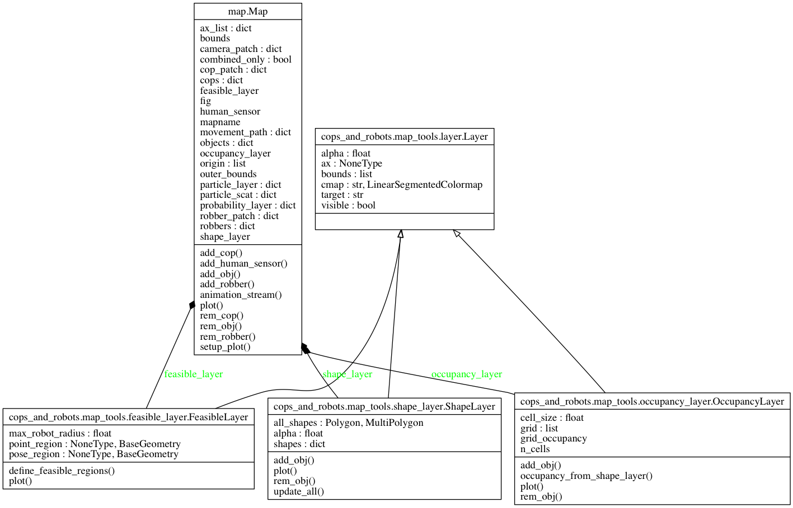

Map module¶
Collects all the information a robot has of its environment.
A map has three different parts: its properties, its elements, and its layers. Properties define key intrinsics of the map (such as its boundaries). Elements define the collections of physical objects on the map (robots, walls, etc.). Layers (meant to be toggled for visibility) represent perspectives on the map: where the map’s elements are, what probability distributions are associated with a given element, etc.
- class Map(mapname, bounds, combined_only=True)[source]¶
Bases: object
Environment map composed of multiple elements and layers.
Parameters: - mapname (str) – The name of the map.
- bounds (array_like, optional) – Map boundaries as [xmin,ymin,xmax,ymax] in [m].
- combined_only (bool, optional) – Whether to show only the combined plot (as opposed to individual plots for each robber, plus one combined plot). Defaults to True.
- add_obj(map_obj)[source]¶
Append a static MapObj to the map.
Parameters: map_obj_name (MapObj) – The object to be added.
- add_robber(robber)[source]¶
Add a dynamic Robot robber from the Map.
- robber_obj : Robber
- The full robber object.
- animation_stream()[source]¶
Update the animated plot.
This is a generator function that takes in packets of animation data and yields nothing.
- rem_cop(cop_name)[source]¶
Remove a dynamic Robot cop from the Map by its name.
- cop_name : str
- Name of the cop.
- rem_obj(map_obj_name)[source]¶
Remove a MapObj from the Map by its name.
- map_obj_name : str
- Name of the map object.